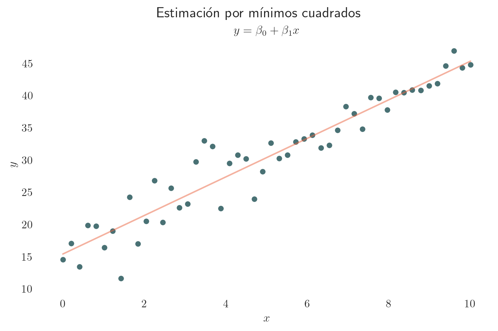

state space models / modelos de espacios de estados
Kalman filter / filtro de Kalman
smoothing /suavizamiento
statistics / estadística
linear models / modelos lineales
mínimos cuadrados recursivos / recursive least squares
python
Autor
Rodrigo Zepeda-Tello
Fecha de Publicación
12 de noviembre de 2022
Resumen
En esta entrada discutimos la idea que inspiró al filtro de Kalman. Empezamos con mínimos cuadrados, pasamos a mínimos cuadrados recursivos y finalmente al planteamiento y solución del filtro de Kalman clásico.
El problema clásico de regresión consiste en estimar \(\mathbf{\beta} = (\beta_1, \beta_2, \dots, \beta_p)^{\intercal}\) dadas \(n\) observaciones \(\mathbf{x}_t = (x_{1,t}, \dots, x_{p,t})^{\intercal}\) (\(t = 1, \dots,n)\) y \(\mathbf{y}_t = (y_1, \dots, y_t)^{\intercal}\) las cuales están relacionadas de la siguiente forma:
\[
y_t = \sum_{i = 1}^{p} x_{i,t}\beta_i + \epsilon_t = \mathbf{x}_t^{\intercal} \mathbf{\beta} + \epsilon_t
\] donde los términos de error \(\{\epsilon_t\}_{t=1}^n\) son variables aleatorias independientes con media cero y varianza \(\sigma^2 < \infty\).
Una de las formas clásicas de estimación es minimizando la suma de cuadrados de los errores de estimación dada por:
\[
S(\mathbf{\beta}) = \sum_{t=1}^n \big(y_t - \mathbf{x}_t^{\intercal}\mathbf{\beta} \big)^2
\] La cual puede escribirse de manera matricial como la minimización de la norma-2: \[
S(\beta) = (\mathbf{y} - \mathbf{X} \mathbf{\beta})^{\intercal}(\mathbf{y} - \mathbf{X} \mathbf{\beta}) = \|\mathbf{y} - \mathbf{X} \mathbf{\beta}\|^2_2
\tag{1}\]
con \(\mathbf{X} = \big(\mathbf{x}_1|\mathbf{x}_2|\dots|\mathbf{x}_n\big)^{\intercal}\) y \(\mathbf{\epsilon} = (\epsilon_1, \dots, \epsilon_n)^{\intercal}\).
Si la matriz \(\mathbf{X}\) es de rango completo, la solución al sistema es la proyección ortogonal:
Y el resultado es la línea (hiperplano) que minimiza los errores:
Código
import matplotlib.pyplot as pltimport numpy as npimport statsmodels.api as smimport seaborn as snssns.set(rc={'text.usetex' : True})sns.set_theme(style="white")#Simulamos datosnp.random.seed(28802574)x = np.linspace(0,10)epsilon = np.random.normal(loc=0.0, scale=2.5, size=len(x))y_true =3*x +15y_obs = y_true + epsilon#Agregamos una columna de 1's a las X para el interceptox_extended = sm.add_constant(x)#Obtenemos modelo de regresiónmodel = sm.OLS(y_obs, x_extended)#Ajustamos modeloresults = model.fit()#Predecimosy_pred = results.predict()#Gráficaf, ax = plt.subplots(figsize=(8, 4.5))f.suptitle('Estimación por mínimos cuadrados')sns.despine(f, left=True, bottom=True)sns.scatterplot(x=x, y=y_obs, color="#497174")sns.lineplot(x=x, y=y_pred, color='#EB6440', alpha=0.5)ax.set_title(r'$y = \beta_0 + \beta_1 x$')ax.set_xlabel(r'$x$')ax.set_ylabel(r'$y$')plt.show()

Mínimos cuadrados recursivos
Si imaginamos un escenario donde los datos llegan de manera ordenada (como en una serie de tiempo) \(\mathbf{x}_1, \mathbf{x}_2, \dots\) podemos pensar en generar distintos estimadores de \(\beta\) dados por la colección \(\{\hat{\beta}_i\}_{i=1}^n\) generados conforme se observan más \(\mathbf{x}\). Es decir, el primer estimador de \(\beta\), \(\hat{\beta}_1\), se estimaría sólo con \(y_1\) y \(\mathbf{x}_1\) mientras que un estimador al tiempo \(t\), \(\hat{\beta}_t\), se generaría con las primeras \(t\) observaciones: \(y_1, \dots, y_t\) y \(\mathbf{x}_1, \dots, \mathbf{x}_t\).
Las betas se pueden estimar recursivamente pues su diferencia es una matriz que sólo depende del término más reciente (ver Triantafyllopoulos (2021) para su obtención) como:
Podemos generalizar ésta idea de estimación secuencial decidiendo agregar un factor de descuento \(\delta\in(0,1]\). De esta manera para la suma de cuadrados pesaría más la información reciente:
Ésta misma suma se puede reescribir como una minimización clásica de cuadrados considerando \(\tilde{\mathbf{X}}_t= \big(\delta^{(t-1)/2}\mathbf{x}_1|\delta^{(t-2)/2}\mathbf{x}_2|\dots|\delta^{0}\mathbf{x}_t\big)^{\intercal}\) y \(\tilde{\mathbf{y}}_t = (\delta^{(t-1)/2}y_1, \dots, \delta^{0}y_t)^{\intercal}\) en la ecuación 1. El estimador \(\hat\beta_t\) de \(\beta\) al momento \(t\) está dado por:
\[
\hat{\beta}_t = (\tilde{\mathbf{X}_t}^{\intercal}\tilde{\mathbf{X}_t})^{-1}\tilde{\mathbf{X}_t}^{\intercal}\tilde{y}_t
\] En el siguiente gráfico podemos ver cómo varía la estimación de \(\beta\) dada por \(\hat{\beta}_t\) conforme avanza \(t\):